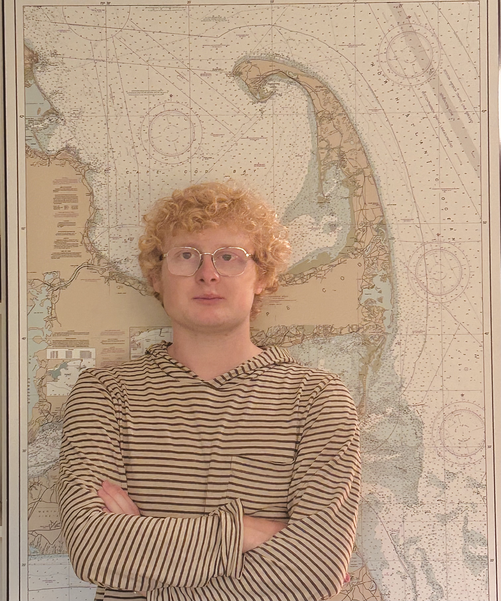

As an Engineer and Designer, I strive to focus on the small details without losing the overall big picture idea. When I develop a product, I prioritize its functionality, considering how it will integrate seamlessly into your life.
I believe rather than adapting the user to the product, the product should adapt to the user. If I had to pinpoint some of my strongest skills, it would be developing CAD models and constructing functional prototypes.
Through my portfolio, I hope to demonstrate both my creativity and technical skills, integrating both design and engineering to produce aesthetically pleasing and practical products.
I enjoy finding solutions to complex problems that involve bringing my ideas to life. I am detail-oriented and always focus on the small details without losing the bigger picture. I am not afraid to ask questions or investigate multiple approaches to determine the best solution.
Ever since I was little, I’ve always been curious about how things work, and that motivated me to study engineering and design so that I can help to create those same things that always fascinated me.